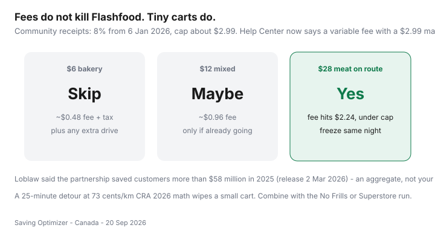

Food & Groceries · Canada
Is Flashfood still worth it after fees? A Canadian break-even check
Flashfood still shows “up to 50% off.” Then checkout adds a service fee, tax on the fee, and you drove 20 minutes for muffins. Fee creep and tiny carts are why some hauls barely beat a regular Thursday sale. The app is still worth it when you buy meat and dairy you already cook, pick up on a Loblaw trip you were making, and freeze what you cannot eat tonight.
This is the fee worksheet. Zones, categories, and freeze-same-day live in the Flashfood Canada guide. Chooser vs surprise bags: Flashfood vs TGTG vs FoodHero.
Disclosure: Flashfood is not a natural affiliate product. Saving Optimizer does not claim a partnership with Flashfood or Loblaw. This break-even works with the free app and the checkout numbers on your phone.
Key takeaways
- Community receipts: 5% fee from May 2024, 8% from 6 Jan 2026, cap about $2.99. Help Center now says “variable” with a $2.99 max. Trust checkout.
- August 2026 user reports: the in-app percent label disappeared. Crunch the line items if you care.
- Skip sub-$10 bakery carts, especially with a detour. Meat on an existing No Frills or Superstore run still pays.
- Loblaw reported more than $58 million saved in 2025 (release 2 Mar 2026) — an aggregate, not your household.
- Drive time uses your cents/km. CRA 2026 provincial allowance (73¢/km) is a strict ceiling.
How fees show up at checkout in-app
You will see item prices, a service fee, and tax. The fee is calculated on the order total and, per Help Center language, capped at $2.99. A minimum fee may apply on tiny orders. Credits can cover the fee. If an item is missing, use in-app help — refunds should include the fee on that order.
We date-stamp community math (stenoodie receipts through August 2026 still behaving like 8%) because Flashfood’s public wording no longer prints the percent. Your screenshot beats our paragraph.

Minimum order habits that protect ROI
Set a personal floor: many households only submit when the cart is $15+ of items they would buy anyway and pickup is already on the route. Below that, the fee plus minutes eat the discount. Do not add random yogurt to “make the fee worth it” if the yogurt will spoil.
Meat/produce vs bakery value after fees
| Cart | Fee sketch | Usually? |
|---|---|---|
| $6 bakery | ~$0.48 + tax | Skip unless you are inside the store anyway |
| $12 mixed dairy | ~$0.96 | OK on route; freeze or finish this week |
| $28 meat | ~$2.24 (under cap) | Yes if you freeze tonight |
| $50 mixed | Hits ~$2.99 cap | Fee becomes noise; waste is the risk |
Salad mixes and sad berries can be 50% off and still be compost. Treat produce like the waste guide says: only if it will be eaten.
Drive time and parking costs
A 12 km extra loop at 73¢/km is $8.76 before parking. That wipes a small cart. If the Flashfood zone is the No Frills you were visiting, extra kilometres are zero and the fee is the only friction. Two-stop rules: when the extra stop pays.
When to skip a small cart
- Bakery only, and you are not already going.
- The window conflicts with your commute.
- You cannot freeze or cook the meat tonight.
- The freezer already holds two unlabelled trays.
- Checkout fee plus tax makes a “50% off” $4 item feel like $5 of hassle.
Same-night rule still wins. A fee-aware deal that becomes garbage is a donation with extra steps. Cook poultry to 74°C. Freeze flat.
Combining with an already-planned store trip
The Canadian pattern that still pays in 2026: Sunday Flipp list, Wednesday No Frills or Superstore, Flashfood zone on the way in, PC Optimum on the rest of the cart. Flashfood is prepaid in-app, so do not expect those dollars to earn grocery points unless a promotion says so. Treat a marked-down bird like a stock-up pack — sale-chicken playbook.
Sources & date stamps
- Flashfood Help Center, “What fees do I pay?” — variable service fee, $2.99 maximum, possible minimum, tax on the fee (page used 20 Sep 2026).
- Community receipts: 5% from 1 May 2024; 8% from 6 Jan 2026; August 2026 reports that the percent label was removed in-app (stenoodie).
- Loblaw news release, 2 Mar 2026: more than $58 million saved in 2025 via the partnership.
- Finance Canada, 2026 automobile allowance: 73¢/km first 5,000 km in the provinces.
Frequently asked questions
How much is the Flashfood service fee in Canada in 2026?
Flashfood’s Help Center describes a variable percentage with a $2.99 maximum and a possible minimum on small orders. Community receipts (stenoodie and others) show 5% from May 2024 and 8% from 6 January 2026, with the percent later hidden in-app. Believe the checkout line on your order.
What order size still makes sense after fees?
Meat and dairy you would buy anyway, picked up on an existing Loblaw trip. A $28 protein order at 8% is about $2.24 in fees — under the cap — and usually wins. A $6 bakery order plus a detour usually loses.
Does Flashfood still beat a regular flyer sale?
Sometimes. A 50% tag minus ~8% can still beat a mild flyer. It loses to a deep discounter loss leader if you also drove extra. Compare to this week’s Flipp, not to the reference retail alone.
Should I make a dedicated Flashfood trip?
Only if the net save after fee, tax, parking, and kilometres is still real. CRA’s 2026 provincial allowance of 73¢/km is a strict test. Combine with No Frills or Superstore when you can.
Is this the same as the Flashfood how-to guide?
No. That guide is zones, freeze-same-day, and categories. This page is the fee-and-drive worksheet.